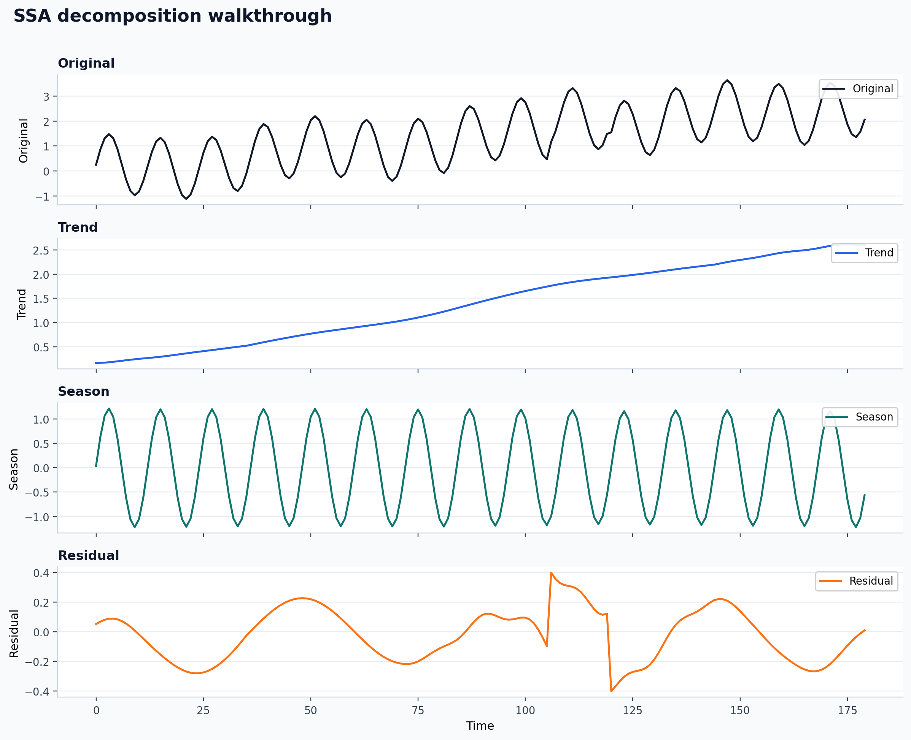
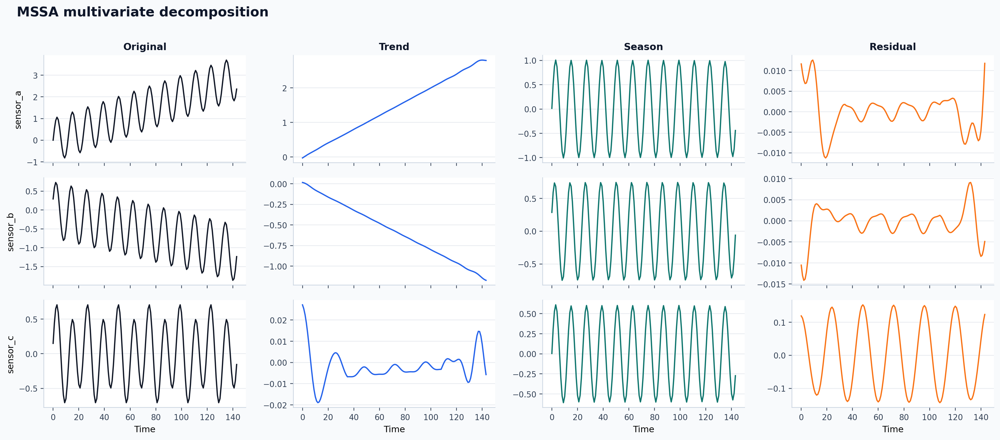

De-Time
De-Time gives one Python and CLI interface for trend, oscillation, residual, method-specific components, and metadata across univariate and aligned multichannel decomposition workflows.
Scientific toolkit / workflow system
Decompose time series without redesigning the workflow.
One interface for trend, oscillation, residual, and metadata.
Give De-Time one series or aligned multichannel data. It returns trend, seasonal or oscillatory structure, residuals, method-specific components, and metadata through the same Python and CLI interface.
- Python and CLI entrypointsStable commands for decomposition workflows.
- Flagship method supportSSASTDSTDRMSSA
- Published examplesReal stdout, plots, and saved artifacts.
- Machine-facing schemasRecommendation and low-token result modes for automation.
detime
Distribution: de-time
Flagship methods: SSA / STD / STDR / MSSA
Machine-facing schemas and low-token result modes
Data in, components out
Data in, components out
De-Time keeps the user-facing contract stable while the method underneath can change. The same shape of result comes back whether you start with a single series or an aligned multichannel panel.
DecompositionConfig(method, params)
decompose(...) or detime run
trend, season, residual, components, metadata
DecompositionConfig(method, params)
decompose(...) or detime run
Why De-Time exists
A stable workflow layer for time-series decomposition.
De-Time exists because decomposition work often moves between notebooks, method-specific wrappers, CLI scripts, and machine-facing automation. The package keeps the method choice flexible while preserving one Python/CLI surface and one result contract.
decompose() entrypoint
DecompResult for trend, season, residual, components, and meta
DecompositionConfig model across Python and CLI usage
Getting Started
Install
Current GitHub install path, extras, native build prerequisites, and FAQ.
Quickstart
First successful Python and CLI runs with the retained De-Time surface.
Choose a Method
Pick a flagship path quickly before dropping into wrappers or optional backends.
Notebook Gallery
GitHub-visible plots and summaries for the retained decomposition methods.
Core Reference
Methods Overview
Method families, maturity levels, and where to start on the retained surface.
Method Matrix
Inputs, maturity, parameters, dependencies, outputs, and recommended use in one table.
Config Reference
Top-level DecompositionConfig fields plus per-method parameter semantics.
API Overview
Canonical Python surface, config and result contracts, and CLI summary.
Workflow Examples

Univariate Workflows
Follow the retained single-series path from example data to plotted components and saved outputs.

Multivariate Workflows
Move from aligned channels to shared-structure decomposition and machine-readable result artifacts.
Advanced / Review
Compare Alternatives
When to use De-Time and when to use specialist packages directly.
Reproducibility
Coverage boundaries, release checks, generated evidence, and validation commands.
Method References
Primary literature and official upstream package links for retained methods.
Citation / Release Notes
Package citation metadata, release notes, and links needed for software review.